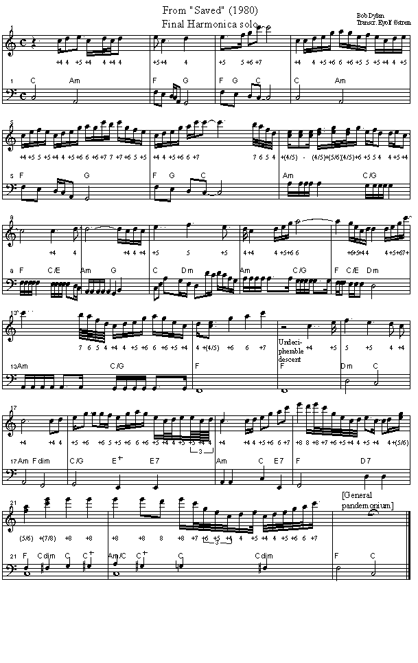

Words and Music by Bob Dylan
Released on Saved (1980)
Tabbed by Eyolf Østrem
Capo 3rd fret (original key Eb major).
See below for a transcription of the final harmonica solo (Eb harp, straight. The
transcription is in C major).
I have also attached a MIDI file, not to listen to, but to save
locally and insert into Javier Argomedo's program "Harping" (download it from his site), which
will produce a harp tabulature - useful if you're not used to reading a score.
Am G F Am bis
C Am F G
You have given everything to me.
F F/G C
What can I do for You?
C Am F G
You have given me eyes to see.
F F/G C
What can I do for You?
Am C/G F C/E
Pulled me out of bondage and You made me renewed inside,
Am G C Dm
Filled up a hunger that had always been denied,
Am C/G F C/E Dm
Opened up a door no man can shut and You opened it up so wide
Am C/G F
And You've chosen me to be among the few.
C
What can I do for You?
You have laid down Your life for me. What can I do for You? You have explained every mystery. What can I do for You?
Soon as a man is born, you know the sparks begin to fly, He gets wise in his own eyes and he's made to believe a lie. Who would deliver him from the death he's bound to die? Well, You've done it all and there's no more anyone can pretend to do. What can I do for You?
You have given all there is to give. What can I do for You? You have given me life to live. How can I live for You?
I know all about poison, I know all about fiery darts, I don't care how rough the road is, show me where it starts, Whatever pleases You, tell it to my heart. Well, I don't deserve it but I sure did make it through. What can I do for You?
